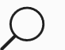
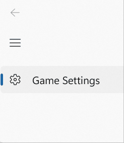

AnimatedIcon
An AnimatedIcon control plays animated images in response to user interaction and visual state changes.
Animated icons can draw attention to a UI component, such as the next button in a tutorial, or simply reflect the action associated with the icon in an entertaining and interesting way.
Custom animations can be created with Adobe AfterEffects and rendered with the Lottie-Windows library to use as an animated icon in your WinUI application. For more detail, see Use Lottie to create animated content for an AnimatedIcon later in this article.
The following example shows a basic animated search icon that was created in Adobe AfterEffects and rendered through Lottie.

Is this the right control?
Use the AnimatedIcon control when a control's icon needs to animate in response to user interaction with the control, such as when a user hovers over a button or clicks it.
Do not use an AnimatedIcon if the animation is not triggered by a visual state transition, and plays in a loop, plays one time only, or can be paused. Use AnimatedVisualPlayer instead.
Do not use AnimatedIcon for anything other than an icon, or where the control does not support an IconElement or IconElementSource property. Use AnimatedVisualPlayer instead.
When an animated icon is not required, use FontIcon, SymbolIcon, or BitmapIcon instead.
Differences between AnimatedIcon and AnimatedVisualPlayer
AnimatedIcon is an IconElement, which can be used anywhere an element or IconElement is required (such as NavigationViewItem.Icon), and is controlled through a State property.
AnimatedVisualPlayer is a more general animation player, that is controlled through methods such as Play and Pause, and can be used anywhere in an application.
Use Lottie to create animated content for an AnimatedIcon
Defining an animation for an AnimatedIcon begins the same as the process to define an animation for an AnimatedVisualPlayer. You must create, or obtain, the Lottie file for the icon you want to add and run that file through LottieGen. LottieGen generates code for a C++/WinRT class that you can then instantiate and use with an AnimatedIcon.
Note
The AutoSuggestBox control uses the AnimatedVisuals.AnimatedFindVisualSource class, which was generated using the LottieGen tool.
You can also define markers in the animation definition to indicate playback time positions. You can then set the AnimatedIcon state to these markers. For example, if you have a playback position in the Lottie file marked "PointerOver", you can set the AnimatedIcon state to "PointerOver" and move the animation to that playback position.
Defining a color property in your Lottie animation named "Foreground" lets you to set the color using the AnimatedIcon.Foreground property.
Recommendations
- Please view the UX guidance for Icons for Windows Apps to ensure your icons match the design principles.
- Limit the number of animated icons on a single screen or view. Only animate icons to draw the user's attention to where they need to take action or when they are performing an action.
Create an animated icon
- Important APIs: AnimatedIcon class
The WinUI 3 Gallery app includes interactive examples of most WinUI 3 controls, features, and functionality. Get the app from the Microsoft Store or get the source code on GitHub
Add an AnimatedIcon to a Button
The following example demonstrates a back button that displays an animated back icon on a PointerEntered event.
- The
AnimatedBackVisualSourceis a class created with the LottieGen command line tool. - The FallbackIconSource is used when animations can't be played, such as on older versions of Windows that don't support Lottie animations.
- If the user turns animations off in their system settings, AnimatedIcon displays the final frame of the state transition the controls was in.
<Button PointerEntered="Button_PointerEntered" PointerExited="Button_PointerExited">
<AnimatedIcon x:Name='BackAnimatedIcon'>
<AnimatedIcon.Source>
<animatedvisuals:AnimatedBackVisualSource/>
</AnimatedIcon.Source>
<AnimatedIcon.FallbackIconSource>
<SymbolIconSource Symbol='Back'/>
</AnimatedIcon.FallbackIconSource>
</AnimatedIcon>
</Button>
private void Button_PointerEntered(object sender, PointerRoutedEventArgs e)
{
AnimatedIcon.SetState(this.BackAnimatedIcon, "PointerOver");
}
private void Button_PointerExited(object sender, PointerRoutedEventArgs e)
{
AnimatedIcon.SetState(this.BackAnimatedIcon, "Normal");
}
Add an AnimatedIcon to NavigationViewItem
The NavigationViewItem control automatically sets common states on an AnimatedIcon based on the state of the control, if those markers are defined in the Lottie animation.
For example, the following example shows how to set a custom animation (GameSettingsIcon) that was generated by the LottieGen tool:
<NavigationView.MenuItems>
<NavigationViewItem Content = "Game Settings">
<NavigationViewItem.Icon>
<AnimatedIcon x:Name='GameSettingsIcon'>
<AnimatedIcon.Source>
<animatedvisuals:AnimatedSettingsVisualSource/>
</AnimatedIcon.Source>
<AnimatedIcon.FallbackIconSource>
<FontIconSource FontFamily="Segoe MDL2 Assets" Glyph=""/>
</AnimatedIcon.FallbackIconSource>
</AnimatedIcon>
</NavigationViewItem.Icon>
</NavigationViewItem>
</NavigationView.MenuItems>

The NavigationViewItem automatically sets the following states on the AnimatedIcon:
- Normal
- PointerOver
- Pressed
- Selected
- PressedSelected
- PointerOverSelected
If GameSettingsIcon has a marker defined for "NormalToPointerOver", the icon will be animated until the pointer moves over the NavigationViewItem. See the following section for more information on creating markers.
Define AnimatedIcon markers
To create the custom GameSettingsIcon in the previous example, run a Lottie JSON file (with markers) through the Windows LottieGen tool to generate the animation code as a C# class.
Once you run your Lottie file through LottieGen you can add the CodeGen output class to your project. See the LottieGen tutorial for more information.
Setting the AnimatedIcon state to a new value also sets a playback position in the Lottie animation for the transition from the old state to the new state. These playback positions are also identified with markers in the Lottie file. Specific markers for the start of the transition or the end of the transition can also be defined.
For example, the AutoSuggestBox control uses an AnimatedIcon that animates with the following states:
- Normal
- PointerOver
- Pressed
You can define markers in your Lottie file with those state names. You can also define markers as follows:
- Insert "To" between state names. For example, if you define a "NormalToPointerOver" marker, changing the AnimatedIcon state from "Normal" to "PointerOver" will cause it to move to this marker's playback position.
- Append "_Start" or "_End" to a marker name. For example defining markers "NormalToPointerOver_Start" and "NormalToPointerOver_End" and changing the AnimatedIcon state from "Normal" to "PointerOver" will cause it to jump to the _Start marker's playback position and then animate to the _End playback position.
The exact algorithm used to map AnimatedIcon State changes to marker playback positions:
- Check the provided file's markers for the markers "[PreviousState]To[NewState]_Start" and "[PreviousState]To[NewState]_End". If both are found play the animation from "[PreviousState]To[NewState]_Start" to "[PreviousState]To[NewState]_End".
- If "[PreviousState]To[NewState]_Start" is not found but "[PreviousState]To[NewState]_End" is found, then hard cut to the "[PreviousState]To[NewState]_End" playback position.
- If "[PreviousState]To[NewState]_End" is not found but "[PreviousState]To[NewState]_Start" is found, then hard cut to the "[PreviousState]To[NewState]_Start" playback position.
- Check if the provided IAnimatedVisualSource2's markers for the marker "[PreviousState]To[NewState]". If it is found then hard cut to the "[PreviousState]To[NewState]" playback position.
- Check if the provided IAnimatedVisualSource2's markers for the marker "[NewState]". If it is found, then hard cut to the "[NewState]" playback position.
- Check if the provided IAnimatedVisualSource2's markers has any marker which ends with "To[NewState]_End". If any marker is found which has that ending, hard cut to the first marker found with the appropriate ending's playback position.
- Check if "[NewState]" parses to a float. If it does, animated from the current position to the parsed float.
- Hard cut to playback position 0.0.
The following example shows the marker format in a Lottie JSON file. See the AnimatedIcon guidance for more detail.
"markers":[{"tm":0,"cm":"NormalToPointerOver_Start","dr":0},{"tm":9,"cm":"NormalToPointerOver_End","dr":0},
{"tm":10,"cm":"NormalToPressed_Start","dr":0},{"tm":19,"cm":"NormalToPressed_End","dr":0},
{"tm":20,"cm":"PointerOverToNormal_Start","dr":0},{"tm":29,"cm":"PointerOverToNormal_End","dr":0},
{"tm":30,"cm":"PointerOverToPressed_Start","dr":0},{"tm":39,"cm":"PointerOverToPressed_End","dr":0},
{"tm":40,"cm":"PressedToNormal_Start","dr":0},{"tm":49,"cm":"PressedToNormal_End","dr":0},
{"tm":50,"cm":"PressedToPointerOver_Start","dr":0},{"tm":69,"cm":"PressedToPointerOver_End","dr":0},
{"tm":90,"cm":"PressedToNormal_Start","dr":0},{"tm":99,"cm":"PressedToNormal_End","dr":0},
{"tm":100,"cm":"PressedToPointerOver_Start","dr":0},{"tm":101,"cm":"PressedToPointerOver_End","dr":0}]
Adding a Standalone AnimatedIcon
The following example is a button that the user clicks to Accept a prompt.
The MyAcceptAnimation class is created with the LottieGen tool.
The FallbackIconSource will be used rather than the animation when animations can't be played, such as on older versions of Windows that don't support Lottie animations.
If the end user turns off animations in their system settings, AnimatedIcon will display the final frame of the state transition the controls was in.
<Button PointerEntered="HandlePointerEntered" PointerExited="HandlePointerExited">
<AnimatedIcon x:Name='AnimatedIcon1'>
<local:MyAcceptAnimation/>
<AnimatedIcon.FallbackIconSource>
<SymbolIconSource Symbol='Accept'/>
</AnimatedIcon.FallbackIconSource>
</AnimatedIcon>
</Button>
private void Button_PointerEntered(object sender, PointerRoutedEventArgs e)
{
AnimatedIcon.SetState(this.AnimatedIcon1, "PointerOver");
}
private void Button_PointerExited(object sender, PointerRoutedEventArgs e)
{
AnimatedIcon.SetState(this.StackPaAnimatedIcon1nel1, "Normal");
}
UWP and WinUI 2
Important
The information and examples in this article are optimized for apps that use the Windows App SDK and WinUI 3, but are generally applicable to UWP apps that use WinUI 2. See the UWP API reference for platform specific information and examples.
This section contains information you need to use the control in a UWP or WinUI 2 app.
The AnimatedIcon for UWP apps requires WinUI 2. For more info, including installation instructions, see WinUI 2. APIs for this control exist in the Microsoft.UI.Xaml.Controls namespace.
- WinUI 2 Apis: AnimatedIcon class
- Open the WinUI 2 Gallery app and see the AnimatedIcon in action. The WinUI 2 Gallery app includes interactive examples of most WinUI 2 controls, features, and functionality. Get the app from the Microsoft Store or get the source code on GitHub.
To use the code in this article with WinUI 2, use an alias in XAML (we use muxc) to represent the Windows UI Library APIs that are included in your project. See Get Started with WinUI 2 for more info.
xmlns:muxc="using:Microsoft.UI.Xaml.Controls"
<muxc:AnimatedIcon />